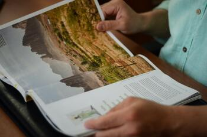

Climate of Idaho
Idaho’s mountainous topography produces an extremely diverse climate pattern. In general, as elevation increases, precipitation increases and mean temperatures drop. On a different scale, the high mountains in eastern Idaho tend to hold back the cold winter air that predominates in Montana and Wyoming, giving the state higher mean temperatures than are found at the same latitude and elevation in those states and in more mid-continental locations. Mean January temperatures range from the upper 10s F (about −8 °C) at Deadwood Dam in the central mountains to the low 30s F (about −1 °C) at Orofino in the central panhandle. July temperatures range from about 60 °F (16 °C) at Deadwood Dam to the upper 70s F (about 25 °C) at Grand View in the southwest.
Idaho is situated in the rain shadow of mountains to the west in Washington and Oregon, and only the higher elevations receive adequate amounts of precipitation. Most of the Snake River plateau receives less than 10 inches (250 mm) of precipitation annually, making it the driest part of the state. At the other extreme, large sections of the Northern Rockies record annual totals of more than 50 inches (1,250 mm) of precipitation, much of it in the form of snow.
Source: brittanica.com